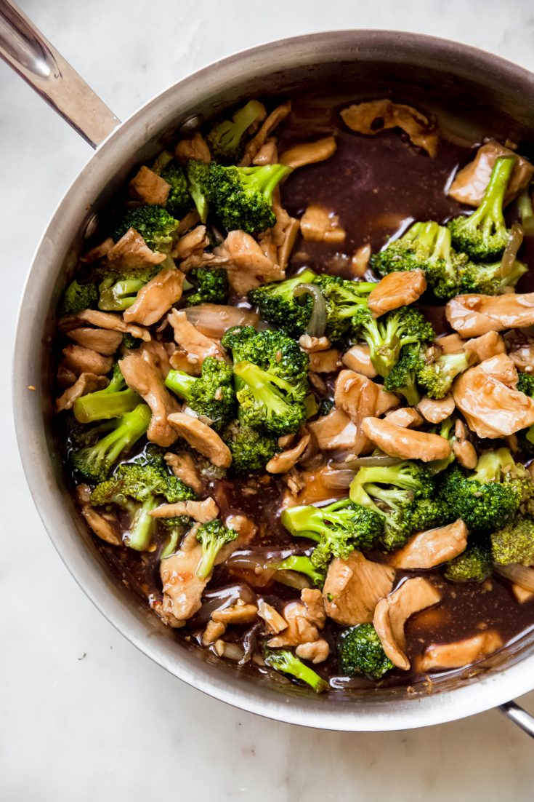

Broccoli and Chicken Stir-Fry

Ingredients for broccoli and chicken stir-fry
- 2/3 cup soy sauce
- 1/4 cup brown sugar
- 1/2 teaspoon ground ginger
- 1 pinch red pepper flakes
- 1 ounce water
- 2 tablespoons cornstarch
- 2 tablespoons sesame oil
- 1 1/2 pounds chicken breast cut into chuncks
- 1 white onion, sliced
- 3 cups of broccoli florets
How to Prepare
Follow the steps below for cooking instructions for your broccoli and chicken stir-fry.
- Make your sauce by stirring soy sauce, brown sugar, ginger, and red pepper flakes together in a bowl. Mix water and cornstarch together in a small bowl and whisk until cornstarch is completely dissolved.
- Heat oil in a large skillet on high heat. Add chciken and onion and cook until chicken is browned.
- Add broccoli to the skillet and saute until broccoli is cooked.
- Pour the soy sauce mixture into the bowl and stir until color is consistent.
- Let broccoli and chicken saute in sauce for additional 5 minutes on low heat.
Back to Home